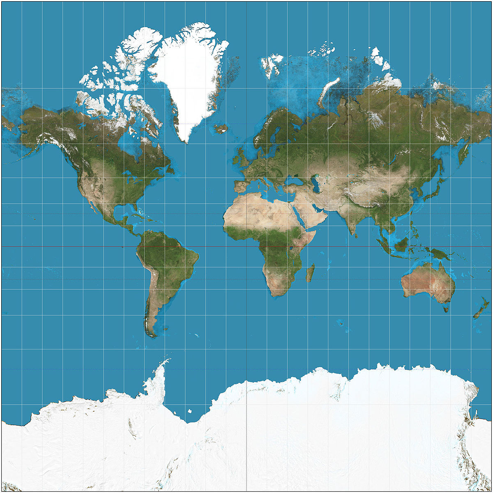
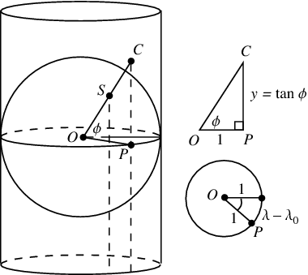
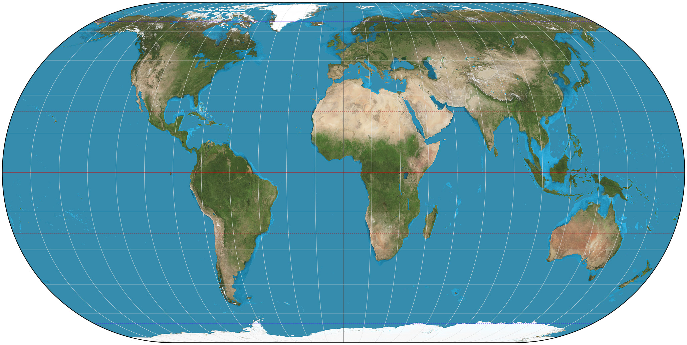
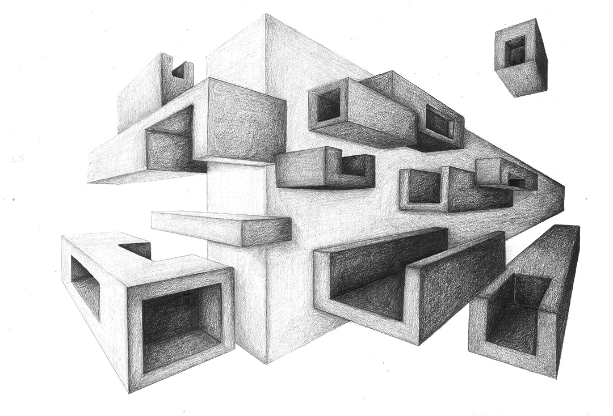
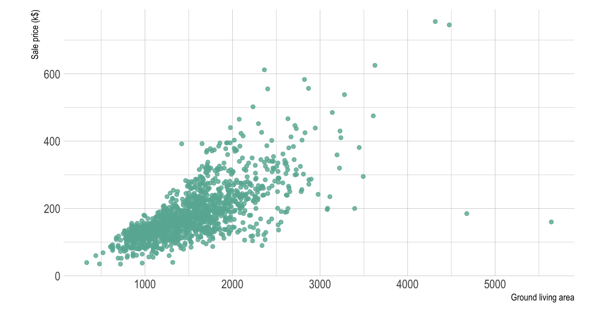
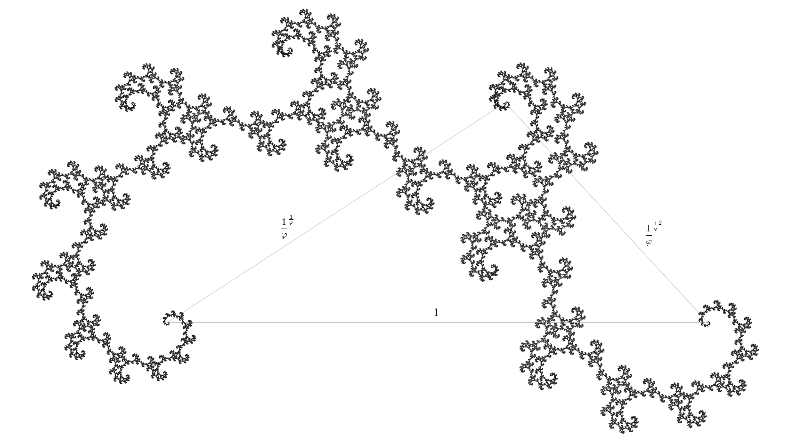

There's been an equation on my mind lately, that goes something like this:
information = data + interpretation
It's a pretty simple idea, but it's one that has helped me organize my thoughts on many occasions and sort through complicated topics more easily.
This isn't going to be a very focused article, but rather a collection of ideas that have crossed my mind, which I'll attempt to use in order to show the usefulness of the above equation. First though, I should probably define my terms.
None of the terms information, data, or interpretation are particularly well-defined, but I'll try to give my general impressions of them.
By information I mean something that is useful in understanding. It can represent something's nature, as in speed, mass, velocity, file size, location, musical key, etc., or it can be a description of the relationship between things, as in equations like f = ma. Information is fundamentally actionable and interesting.
By data I mean something that may or may not represent information. So while “the object's mass is 32kg” would be information, “32” by itself would be data. But it might not represent anything: if I smash my keyboard and lakjdsbflksnd comes out, that would be data (under my definition).
By interpretation I mean a means to tranform data into information. This generally takes the form of an agreed upon association between one kind of data and another, such as ASCII, which provides a means to interpret numbers as letters.
With that (hopefully) clarified, I will now proceed to ramble on about some instances of where I've used this “equation of information” to aid my understanding of things.
The most important recognition of the modern era is that numbers can represent almost any type of information. The second most important is recognizing that numbers can be represented by wires being on or off.
It's often said that computers speak in 1's and 0's, but that isn't really true: it's not 1's and 0's that are on the hardware of computers, its wires (and various other hardware) that are on and off. The association of 1 with on and 0 with off is an interpretation, and the first level in a grand heirarchy of interpretations that make computers so useful. A random wire being on and off is merely data and doesn't signify anything interesting by itself. The fact that we can interpret something being on as 1 and off as 0 allows us to transform this data into binary, another form of data.
Once we interpret the physical nature of a computer as being a series of binary numbers, we know we can transform that into all sorts of other data, an interpretation already known for hundreds of years.
And once we have data that we can interpret using numbers, we know that we can use any existing interpretation of numbers for other types of information. We use these various means of interpretation to yield different types.
In memory everything is stored as binary (or, more precisely, on and off bits). This data has no awareness of what it is intended to represent, it is simply data waiting to be interpreted. The different ways we interpret data yield different information.
In the following snippet of C, for example, we are instructing the computer to interpret raw data in two different ways:
char data = 80; printf("%d\n", data); // 80 printf("%c\n", data); // P
When we use the %d format specifier, we tell the program to interpret the raw data as a number, which is fairly easy to do given that it is stored in a format (things being on and off) which is essentially binary, the conversion of which to decimal is fairly straightforward (if you consider long division of binary straightforward).
When, however, we use the %c format specifier we tell the program to interpret the data differently, as being an ASCII code for a character. The ASCII character encoded as 80 is P, so this is what is printed out. This needn't be the only way we interpret the data as a character, however. If we, presumably as a means to atone for our sins, were to use EBCDIC encoding, 80 would be interpreted as &.
The different types in a computer language are really various interpretations of what is ultimately binary data. Specifying a parameter of a C function as an int will allow it to know to read 4 (or sometimes 2) bytes in order to interpret the data given to it. Having an unsigned int tells the program to still take 4 bytes, but to interpret the binary number “as usual,”and never as a 2's compliment.
This is also why specifying the type of a pointer is necessary, as the program needs to know how many bytes to grab upon a dereferencing.
Another important interpretation of the nature of computers, which focuses more on their functionality, is that they can simulate turing machines.
A Turing machine is the classical way we interpret the capabilities of a computer. A Turing machine is an abstract idea that has been been (thesisized? proven isn't the right word) to be able to perform any computable function. As such, if we can find an interpretation of the workings of a computer to be equivalent to that of a turing machine, we know that it has the same capabilities of a Turing machine.
Showing this for a modern computer is fairly trivial, as computers are incredibly capable devices far exceeding Turing machines, but rather famously Rule 110 has been shown to be equivalent to Turing machines, and HTML with CSS has been shown to be able to simulate Rule 110, making them (together) capable of arbitrary computations.
This goes to show a powerful fact of interpretations: if data can be interpreted to represent the same information as another type of data, everything proven about that information can be used for both kinds of data.
In the cases just mentioned, we have information about Turing machines, and interpretations of data about the physical devices we call computers, Rule 110, and HTML + CSS.
This also goes to show that what constitutes information in one context can be mere data in another.
We've talked a lot about computers, and could continue to do so until Ackermann(4, 2) terminates on one, but there's another topic dear to my heart that I want to talk about.
The Mercator projection really does get a bad rap. Ever since the West Wing episode (S4, ep. 16) where cartographers come in to complain about the Mercator projection everyone thinks they're an expert on the subtle art of projections. The scene itself is much more useful in demonstrating how experts mislead laymen with jargon than actually conveying information about maps. At one point one of the “experts” says that “Germany appears in the middle of the map when it's in the northernmost corner of the earth.” What could that possibly mean? That same expert goes on to say that the Peter's projection has “fidelity of axis,” a similarly meaningless phrase.
But I don't want to rant about map projections (well, I do, but not here), so let's get back on track.
The act of projecting the surface of the earth, a sphere, onto a flat surface is that of creating data to be interpreted. We see a map (data) and interpret it as information about the world in which we live. The problem with the Mercator isn't bias or any such nonsense, it's that it distorts area, causing reasonable interpretations to produce inaccurate information.
The reason for this misrepresentation is that the Mercator is meant to be conformal (angle-preserving), and that comes at the cost of preserving area. In fact, any flat representation of a curved shape will cause distortion of one kind or another, either in angles or area or both, a fact proven by Gauss.
Given that any map will cause distortion, a fact that frustrates our ability to interpret it well (that is, to produce accurate information), I see two possibilities:
This would constitute teaching people about how projections work.
Most reasonable people would probably see the above Mercator map and conclude that there is distortion, as Antarctica is surely smaller than all of Eurasia, but young children, the kind of people likely to be surrounded by maps in a classroom, might not do this. In order to get them to interpret the data on the map well we would need to teach them about projections. For the mercator this might mean showing them how it's made.
But that might be difficult and involved. Mercator maps are produced by a cylindrical projection, which is not very difficult conceptually, but it still might be cumbersome to teach, and it would certainly be preferable for the data to be capable of easy interpretation on its own. This leads us to our second possibility.
It's generally dangerous to use words like 'better' when you're unclear about your goal, so let's clarify what exactly we're looking for: by 'better' data I mean data that is more natural to interpret. By natural, I mean that the naive interpretations are more likely to be correct (that is, produce accurate information).
The problem with the Mercator projection is that the naive interpretation of the data it presents, that areas are represented well, does not produce accurate information. But we already know that all maps cause distortion, so how do we get around this? I initially thought this to be insurmountable, but then I saw this projection:
This is the Eckert IV projection. It is an equal-area projection, meaning that it represents areas accurately, so naive interpretations of the data it presents about area would likely be correct, but it also, I believe, allows for easy interpretation of the angles within, and thus shape of, landmasses.
It accomplishes this by being curved at the edges. This aspect of the data it presents suggests the interpretation that areas nearer the sides are more distorted, an interpretation that would be correct.
This is a principle generalizable to all user-facing data: the more the data suggests about how to correctly interpret it the better. The Eckert IV projection above accomplishes this by creating an illusion of curvature where curvature has indeed distorted the image. Compare this to the Gall-Peter's projection, which doesn't do anything to suggest where its distortion comes from:

This is the map advocated in the West Wing episode mentioned earlier, but is even worse than the Mercator in some ways. The Mercator gradually increases its distortion as you near the poles, but the Gall-Peter's, rather oddly, has zero distortion at 45° north and south, the distortion increasing as you go farther away from these latitudes. That is far less obvious than the distortion on the Mercator.
A perfect illustration (literally) of what I'm getting at is perspective drawing. Perspective drawing is all about suggesting interpretations for the data it presents. It accomplishes this by various methods: vanishing points, shading distant objects, detailing near objects, foreshortening, etc.
All these effects combine to make the data (something two dimensional) easy to interpret, to make naive interpretations more likely to produce accurate information (about something three dimensional).
Making good data for humans requires all parts of information = data + interpretation to be working together.
I want to conclude with a less obvious but very powerful concept, that of extending interpretations. This is a technique used frequently in mathematics and is endlessly interesting and quite fun. Before that, however, I'll talk about when not to extend interpretations.
As a simple example, we might consider a case where we have a scatterplot representing two pieces of information about various houses: square footage, and price. In this example, the plot is the data. Our interpretation of this data is that the x coordinate is the square footage and the y coordinate the price.
Here, our sample of houses is represented as points on a plane. A natural question to ask about a pair of points on a plane is what the distance between them is. So what if we were to do that here? It would be easy enough to plug in the coordinates of the two points and calculate it, but what would it mean?
It would mean nothing. One clue that it would mean nothing is that it would not have coherent units. If, for example, we were to consider the points (2, 7) and (5, 3), we could naively obtain the distance as being 5, but if we were to include units in the calculation we would see that it wouldn't make sense:
d2 = (5 ft2 - 2 ft2)2 + ($3 - $7)2 = 9 ft4 + 16 $2
Not only do our constituent units make no sense (ft4 can kinda make sense in higher-dimensional geometry, but I don't know what square dollars could possibly mean), but we have no way to add these units.
This is a case where an attempted extension of our interpretation of our data completely failed. But there are cases where you can extend interpretations of data, and I'd like to present two of them.
A child's first introduction to exponents will treat them as repeated multiplication. So
x3 = x · x · x
But our ability to take the information “x multiplied by itself n times” and represent that as the data xn suggests that we might be able to have n be any number. Yet again we're in the dangerous territory of taking a representation of information, data, and trying to augment the way we interpret that data based on the form the representation takes. But this is (obviously) a case where this is possible.
The way we accomplish this is by examining the properties of our information.
The most basic property exponents is that xa · xb = xa + b. From this we can conclude that xa · x0 = xa + 0 = xa. If we divide both sides by xa, we get that x0 = 1. This allows us to extend our interpretation of exponentiation, something previously sensible only for positive integers, into the non-negative integers.
Using this fact, we can extend our interpretation to negative numbers:
xa · x-a = xa - a = x0 = 1
We again divide both sides by xa to get that x-a = 1/xa.
This allows us to interpret exponentiation for any integer. We can do similar derivations for fractions, but I'll leave that as an exercise for the reader if so inclined.
Many students are taught the mechanics of exponents and how to manipulate them in equations, but most aren't taught the justification of why we interpret them the way we do. I would suspect this is at least partly because many teachers don't know. I will yet again resist my temptation to descend into a rant, but the way we teach math is absolutely awful if we want to foster actual understanding and conceptual maturity.
Anyway, let's go on to an even more surprising generalization of an interpretation.
We all have a very good command over interpreting information about dimensions less than four. Zero dimensional objects can only be points, one dimensional objects exist on a line, two dimensional objects exist on planes, and three dimensional objects (including you and I) exist within a volume.
Talk about higher dimensions is generally obnoxious and deliberately obfuscatory, so we'll skip over that. What's of interest for us is fractional dimensions.
In order to extend our interpretation of dimensions, we first have to be very clear about what our current interpretation is. How exactly are we interpreting the data “an object is n dimensional”? The danger of intuitive concepts is that they go left unexamined.
One conceptualization of dimension, the one taught in every linear algebra course, is that it is the the number of vectors required for a basis. This is a very useful definition in certain circumstances, but won't be useful for ours.
The definition we will use will be a generalization of the square-cube law. For those that don't recall, the square-cube law states that the 2-dimensional parts of an object are directly proportional to the square of the 1-dimensional parts. For example, if we take a circle and multiply its radius (a 1-dimensional part) by 3, we multiply its area (a 2-dimensional part) by 32. Similarly, 3-dimensional parts of shapes are directly proportional to the cube of 1-dimensional parts. So if we multiply the radius of a sphere by x we multiply its volume by x3.
This leads to a general definition of dimension for any given shape. There's a bit more math involved (a great explanation can be found here), but we can generalize the square-cube law like so:
P = Sd
Where d is the dimension, P is size (technically the number of self-similar pieces, see above link), and S is the scaling factor. This would mean that
d = log(P) / log(S)
This actually isn't so much a generalization of our interpretation as a clarification of it, but its effects will very much seem like a generalization once you see that it can be used to assign fractional dimensions to certain objects, something previously nonsensical. And this happens all the time, where a formalization of something intuitive opens up new insights. One mathematician noted that
We shall find that by analyzing our ordinary mathematical notions we acquire fresh insight, new powers, and the means of reaching whole new mathematical subjects by adopting fresh lines of advance after our backward journey.
In this case, our analyzation of what we mean by dimension allows us the new power of assigning fractional dimensions to objects, as well will now see.
The types of objects that have fractional dimensions are, appropriately, called fractals. You probably know fractals as shapes that are infinitely self-similar, but generally they are any shape with a fractional dimension (the dimension being defined as the Hausdorff dimension, not exactly the same as our definition but close enough).
Fractals do not scale according to the square-cube law, but do adhere to our above definition of dimension above. We won't go through the derivations (some are surprisingly not so terrible, but all require calculus), but we will see some examples (in order of dimension):
This image depicts successive iterations of making the fractal, rather than the fractal itself. It goes to show that dimensions needn't be fractions, they only need their “normal” (topological) dimension not to equal their Hausdorff (I'm sorry but math is really technical and I didn't want to get too into the weeds). This fractal is formed by removing pieces of a specified length from the middle of each line segment, the fractal being formed once you've done that for an infinite amount of time.
This is perhaps the most well known of all fractals, perhaps due to the ease with which it can be created, or perhaps due to its cool name.
The Golden Dragon fractal derives its name from its dimension.
This one's neat 'cause it's curvy.
All these examples and more can be found on the Wikipedia page on the subject.
I hope a general impression of an idea came through in all that. If not send me an angry smoke signal. If so, send me a happy smoke signal. Either way, what I was attempting to get across is the power of the simple idea that
information = data + interpretation
We went through how types in computers are various interpretations of the same kind of data (binary), how good maps and drawings (and good data in general) suggest appropriate interpretations, and how we can generalize our interpretations to produce information about data that might have been considered nonsensical.
But if you only take away one thing from this discussion, it should be that the map scene from The West Wing is trash.